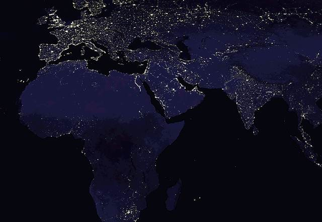

DR / FIELDNOTESEST. NOT FINISHED
A website that begins with a question.
Hello.
DEEPNIL RAYMATHEMATICS · ASTRONOMY · QUESTIONS
A website that begins with a question.
DEEPNIL RAY — INDEPENDENT INQUIRIES
Mathematics.
Astronomy.
The things worth asking twice.

A search is never the sky itself. A proof is never merely a pattern.
I work across fields that do not share a common vocabulary.
From the logic of recurrence relations to astronomical light curves, the method begins with a more precise question.
Turn the
work.
What disappears between the measurements?

PLATE 01 / THE OBSERVATIONAL SKYAsteroid characterisation and astronomical survey research. The interesting cases are often the ones an ordinary filter was never designed to retain.
Main-belt asteroid study ↗Integer sequences, recurrence relations, generating functions, and the work of turning computational evidence into mathematical arguments.
Mathematical work on OEIS ↗ PLATE 02 / MATHEMATICS
PLATE 02 / MATHEMATICS PLATE 03 / SCIENCE COMMUNICATION
PLATE 03 / SCIENCE COMMUNICATIONHelping create opportunities for scientific conversation, across institutions, disciplines, and generations of curious minds.
NoRCEL team ↗Sometimes the most useful discovery is not an answer.
It is a better question.A NOTE TO MYSELF / 2026Articles and public manuscripts. Preprints are labelled; the titles reproduce their stated claims and are not independent verification of proofs.
06 SELECTED REFERENCESI'm Deepnil Ray. I study at Ashoka University and work across mathematics, observational astronomy, and science communication through the NoRCEL Institute.
I prefer problems where the interesting part is still unknown. This site is a record of questions, unfinished work, and the occasional answer.
Research profile ↗For research collaborations, mathematics, astronomy, or a conversation worth continuing.